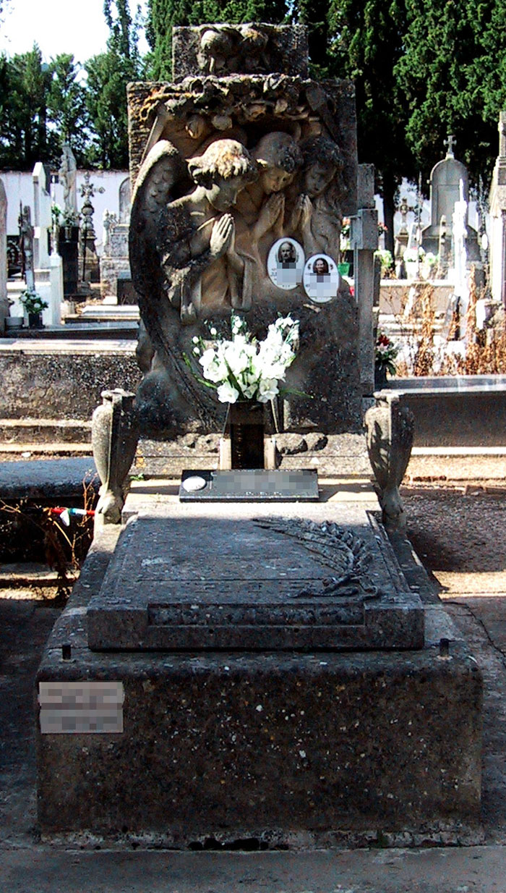
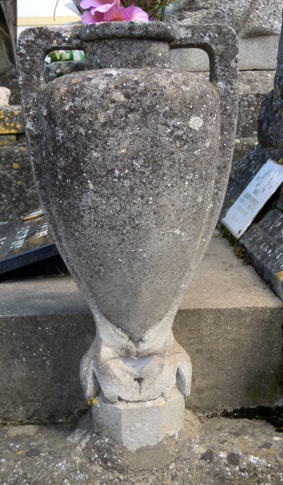
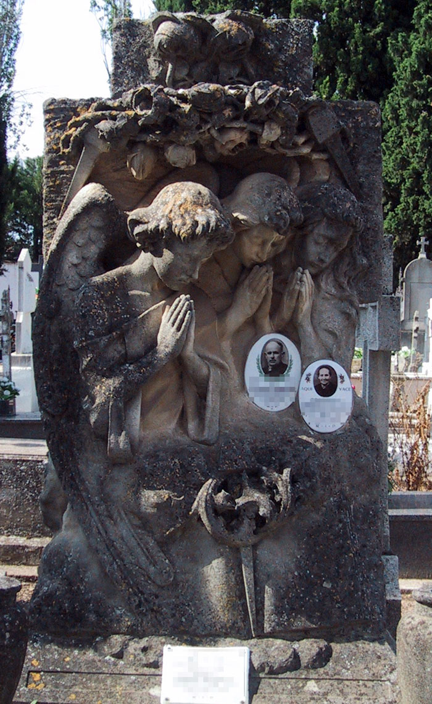
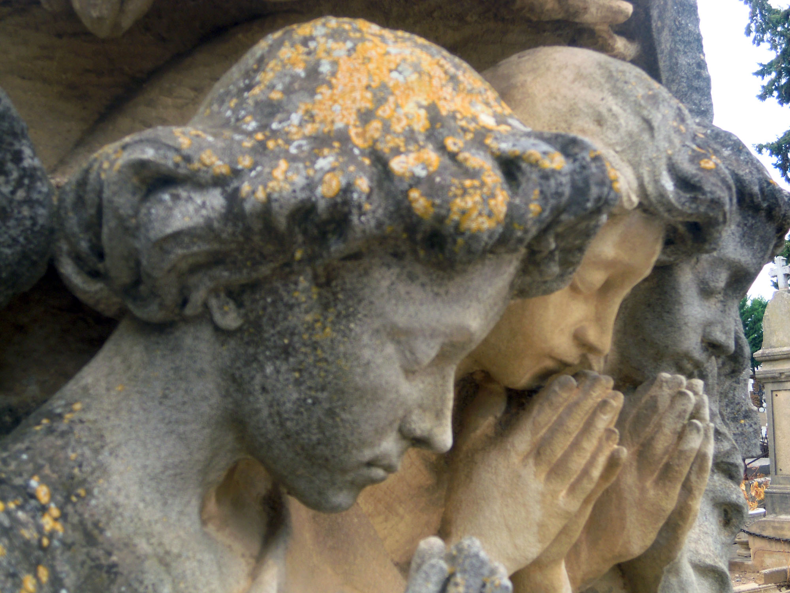

El Panteón de Francisca Hernández está situado en la calle de San Federico, muy cerca del actual ingreso al Cementerio de La Planilla. Francisca Hernández Belloso (Calahorra, 1885-1977) casó con el labrador Daniel Lorente Sáenz (Calahorra, 1881-1951) y el matrimonio, en 1925, estaba avecindado en la calle Santiago nº 69 con sus hijos[1]. Su sepultura está inspirada en el panteón de Joaquín Prat en el cementerio zaragozano de Torrero (1910-1911), obra del taller Buzzi-Gussoni. La inscripción "PROPIEDAD DE FRANCISCA HERNANDEZ E HIJOS" que puede leerse en la losa, hace pensar que el sepulcro debió realizarse tras el fallecimiento del cabeza de familia en 1951. Sin embargo, su estilo parece retrotraerse a los años 1910-1920 por lo que quizá pudo haberse reutilizado la cabecera tras la prescripción de una antigua concesión. Su calidad es incluso superior a la de otras sepulturas documentadas y atribuidas al taller Buzzi.

Es una sepultura con cama de ladrillo y cemento cubierta con gruesa losa de piedra decorada con clavos en los ángulos y una palma en relieve (símbolo de victorias obre la muerte) en el lado izquierdo junto a las letras RIP. A ambos lados de la losa aparecen dos pequeñas ánforas de piedra con función de floreros, cuyas asas se prolongan a lo largo del vaso y rematan en hojas esquemáticas.

La cabecera se alza sobre la cama y tiene forma de cruz. Está dominada por un gran relieve que muestra tres ángeles adolescentes en oración, entre nubes. Los tres visten livianas túnicas de cuello redondo o barco y amplias mangas, que en ocasiones dejan al descubierto un hombro. Dos de ellos tienen apariencia masculina, con cabello corto y ondulado; el tercero es de aspecto femenino, con cabello liso en la parte superior convertido en gruesos bucles. Todos ellos inclinan la cabeza hacia abajo y tienen los ojos entrecerrados y las manos juntas en actitud orante. Su expresión es severa y tranquila. Las alas parecen pegadas al cuerpo y tan sólo se ha representado con cierto detalle un ala del ángel situado en el lado derecho. Bajo los ángeles se encuentra un libro que se mantiene abierto gracias a un gran clavo. En él hay una inscripción casi perdida, aunque todavía pueden leerse: "(PAD)RE NRO/QUE ESTA(S EN EL) CIELO" y "CREO EN LA (RESURREC/CION) DE L(A CARNE Y)/LA VIDA (ETERNA)". Sobre los ángeles aparece un grupo de rosas, flanqueadas por otros dos grandes clavos. La línea curva formada por el ala de ángel, los clavos superiores y las rosas del remate encuadran el relieve en una forma elíptica abierta. El bloque de piedra está apenas desbastado en la parte trasera. Las figuras de los ángeles, de extraordinaria calidad y dulzura, parecen emerger del bloque pétreo diferenciando las texturas: rugosa y grosera en la piedra; suave, lisa y muy pulida en las figuras, recordando así su origen celestial.


Este sepulcro muestra una sensibilidad más intimista y personal aunque sin renunciar a la religiosidad, representada por la inscripción con fragmentos del padrenuestro y del credo y por los tres clavos que aluden a la crucifixión. Aunque existen diferencias entre las sepulturas zaragozana y calagurritana y a pesar de que no hay ninguna documentación que lo avale, resulta innegable que ambas proceden del mismo taller, tanto por la composición como por el tratamiento del relieve, la concepción escultórica de la cabecera y la decoración vegetal. Las diferencias se centran en las zonas superior e inferior y no afectan en lo sustancial al relieve figurativo. El ejemplar calagurritano es de composición más cerrada al haberse eliminado la elevada cruz posterior con corona floral, sustituida por una estructura cruciforme apenas sugerida y recubierta de las típicas rosas del taller Buzzi. Ambas sepulturas pudieron labrarse con escaso margen cronológico.
[1] Archivo Municipal de Calahorra. Cod. 2.1.4.13. Sig. 444/2 (padrón de 1924-1925), fol. 225 (calle Santiago nº 69).